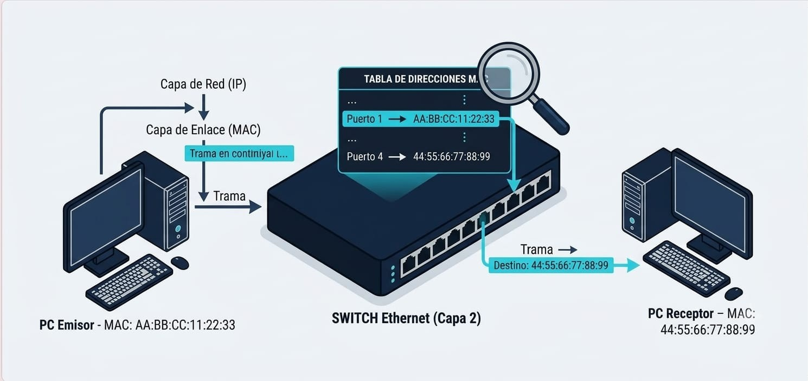

Glosario de la Capa 2
- Trama (frame)
- Unidad de datos de la Capa 2. Lleva la MAC de origen, la MAC de destino, los datos y un código CRC para detectar errores.
- Dirección MAC
- Identificador único de 48 bits grabado en la tarjeta de red. Se escribe en hexadecimal, por ejemplo
1A-2B-3C-4D-5E-6F. - NIC (tarjeta de red)
- Componente que contiene la dirección MAC y conecta el dispositivo al medio de transmisión.
- Switch
- Dispositivo de Capa 2 que aprende las direcciones MAC y reenvía cada trama solo al puerto correcto.
- Tabla MAC
- Registro del switch que relaciona cada dirección MAC con el puerto donde fue aprendida.
- ARP
- Protocolo que descubre la dirección MAC que corresponde a una dirección IP dentro de la misma red.
- Broadcast
- Trama enviada a la MAC
FF:FF:FF:FF:FF:FF, que reciben todos los dispositivos de la LAN. - Unicast
- Trama dirigida a una sola dirección MAC.
- CRC
- Comprobación de Redundancia Cíclica: cálculo que permite detectar si una trama se dañó durante el viaje.
- LLC y MAC (subcapas)
- La Capa 2 se divide en LLC, que se comunica con la capa superior, y MAC, que controla el acceso al medio físico.
- LAN
- Red de área local: dispositivos conectados en un espacio reducido, como el Laboratorio 2.
Comandos útiles del laboratorio
Estos son los comandos que usamos en Cisco Packet Tracer para observar la Capa 2 en acción.
| Comando | Dónde se usa | Para qué sirve |
|---|---|---|
ipconfig /all |
Símbolo del sistema de la PC | Muestra la dirección IP y la dirección física (MAC) de la tarjeta de red. |
ping 192.168.1.11 |
Símbolo del sistema de la PC | Comprueba la comunicación con otra PC de la LAN y provoca que se use ARP. |
arp -a |
Símbolo del sistema de la PC | Muestra la tabla ARP: las direcciones IP y sus MAC aprendidas. |
arp -d |
Símbolo del sistema de la PC | Borra las entradas ARP para repetir el proceso desde cero. |
show mac address-table |
CLI del switch | Muestra la tabla MAC del switch con cada MAC y su puerto. En algunas versiones se escribe show mac-address-table. |
arp -a antes de hacer un ping, la tabla puede estar vacía. Después del ping aparece la MAC del destino.
Herramientas para practicar
- Cisco Packet Tracer: simulador con el que armamos la LAN del Laboratorio 2 y observamos las tramas en modo Simulation.
- Símbolo del sistema (CMD): permite ejecutar
ipconfig,pingyarpen una computadora real. - Wireshark: analizador de tráfico que muestra las tramas Ethernet con sus direcciones MAC de origen y destino.
Material visual de la Capa 2
Imágenes del laboratorio que puedes consultar para repasar cada tema.


.png)
Preguntas frecuentes
¿Qué hace la Capa 2 del modelo OSI?
Toma los paquetes de la Capa 3 y los convierte en tramas con direcciones MAC de origen y destino, para entregarlos entre dispositivos de la misma red local.
¿Cuál es la diferencia entre una dirección MAC y una dirección IP?
La MAC identifica la tarjeta de red y se usa dentro de la red local (Capa 2). La IP identifica al dispositivo en la red y permite comunicarse entre redes distintas (Capa 3).
¿Por qué el switch no envía todo a todos los puertos?
Porque aprende qué MAC está en cada puerto y guarda esa información en su tabla MAC. Así reenvía cada trama unicast solo al puerto del destinatario.
¿Para qué sirve ARP?
Para descubrir la MAC de un dispositivo cuando solo se conoce su IP. La solicitud viaja en broadcast y la respuesta regresa en unicast.
¿Qué pasa si una trama llega dañada?
El receptor calcula el CRC, lo compara con el que trae la trama y, si no coinciden, la descarta.
Enlaces para seguir aprendiendo
- Cisco Networking Academy: cursos de redes y descarga de Packet Tracer.
- RFC 826: especificación original del protocolo ARP.
- RFC 894: cómo se transmiten datagramas IP sobre redes Ethernet.
- Wireshark: sitio oficial del analizador de tráfico.
Recursos técnicos del portal
Estos son los archivos que el navegador descarga para mostrar esta página. Todos están dentro de la carpeta del portal, sin depender de ninguna computadora en particular.
| Tipo | Ubicación | Función |
|---|---|---|
| Hoja de estilos | css/estilos.css |
Colores, tipografía, encabezado, secciones, tablas y pie de página. |
| Hoja de estilos | css/estilos-v2.css |
Buscador, carrusel, tarjetas, pestañas y footer de la segunda versión. |
| Script | JS/script.js |
Menú desplegable Modelo OSI, carrusel, buscador y pestañas. |
| Imágenes | img/ |
Logo, topología de la LAN, capturas de Packet Tracer y diagrama de la Capa 2. |
| Documentos | documentos/ |
Fuentes consultadas en formato web y PDF. |